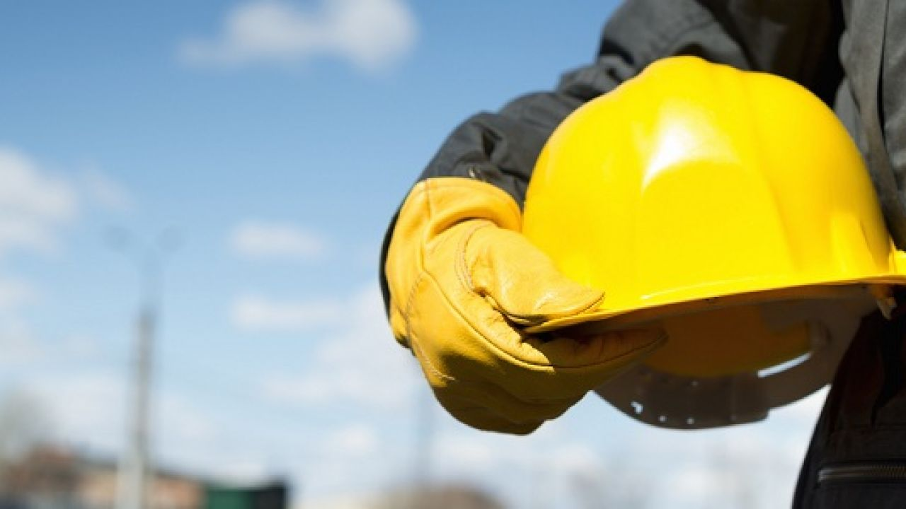

ONU ODS 8
ODS são objetivos de desenvolvimento sustentável são 17 objetivos e nesse site estamos dando ideias para o ods 8 que tem como obejtivo dar um trabalho digno e crescimento econômico a todos.
Educação financeira
A Educação financeira é um fator crucial para resolver o problema do crescimento econômico,
porque pessoas que poupam seu dinheiro podem investir em ações, investindo em ações pode-se fazer dinheiro, mas
para você "ganhar" esse dinheiro a empresa que você investiu cresceu, com o crescimento da empresa não é so você
que ganha, os funcionários e pessoas que são desempregadas também ganham até porque a empresa que cresce expande,
com isso a contratação de pessoas diminui o desemprego e a economia aumenta.Agora imagine isso em uma escala maior, milhares de pessoas no mundo seriam beneficiadas.
Pessoas com uma boa educação
financeira poderiam passar por essa crise mais tranquilamente
até porque um dos grandes problemas dessa pandemia foi a quarentena já que pessoas ficariam sem receber salário ou
recebendo ajuda do governo, mas para quem teve uma educação financeira sabe que é necessário fazer uma reserva de emergência(12 meses do seu custo mensal investidos em uma aplicação conservadora e com liquidez.
)para se previnir de um futuro imprevisto e por esses motivos que eve ser ensinado educação financeira nas escolas para que as crianças ja tenham esse conhecimento.
Trabalho Digno
Para termos um trabalho digno deve-se evitar trabalho infantil pois as crianças devem estar na escola, já em trabalhos repetitivos podem ser feitas novas maquinas para fazer essas funções ja que podem causar lesões em pessoas.
 clique aqui para mais informações da ODS 8.
clique aqui para mais informações da ODS 8.